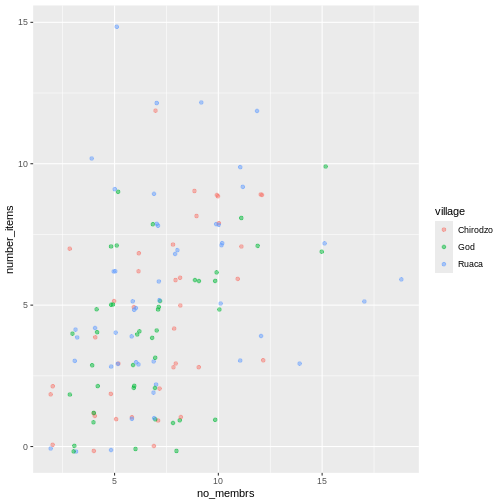

Image 1 of 1: ‘RStudio extends what R can do, and makes it easier to write R code and interact with R.’
Image 1 of 1: ‘automatic car gear shift representing the ease of RStudio’
Image 1 of 1: ‘Screenshot of the RStudio_startup screen’
Image 1 of 1: ‘Example of a working directory structure’
Image 1 of 1: ‘Screenshot of Packages pane’
Image 1 of 1: ‘Screenshot of Install Packages Window’
Image 1 of 1: ‘A 3 by 3 data frame with columns showing numeric, character and logical values.’
Image 1 of 1: ‘Monsters at a fork in the road, with signs saying here, and not here. One direction, not here, leads to a scary dark forest with spiders and absolute filepaths, while the other leads to a sunny, green meadow, and a city below a rainbow and a world free of absolute filepaths. Art by Allison Horst’
Image credit:
Allison
Horst
Image 1 of 1: ‘Yes/no bar graph showing number of individuals who are members of irrigation association’
Image 1 of 1: ‘Bar plot of association membership, showing missing responses.’
Image 1 of 1: ‘bar graph showing number of individuals who are members of irrigation association, including undetermined option’
Image 1 of 1: ‘Scatter plot of number of items owned versus number of household members.’
Image 1 of 1: ‘Scatter plot of number of items owned versus number of household members, with transparency added to points.’
Image 1 of 1: ‘Scatter plot of number of items owned versus number of household members, showing jitter.’
Image 1 of 1: ‘Scatter plot of number of items owned versus number of household members, with jitter and transparency.’
Image 1 of 1: ‘Scatter plot of number of items owned versus number of household members, showing points as blue.’
 Image 1 of 1: ‘Previous plot with dots colored by village.’
Image 1 of 1: ‘Scatter plot showing positive trend between number of household members and number of items owned.’
Image 1 of 1: ‘Box plot of number of rooms by wall type.’
Image 1 of 1: ‘Previous plot with dot plot added as additional layer to show individual values. Boxplot layer is transparent.’
Image 1 of 1: ‘Box plot of number of livestock owned by wall type, with dot plot added as additional layer to show individual values.’
Image 1 of 1: ‘Previous plot with dots colored based on whether respondent was a member of an irrigation association.’
Image 1 of 1: ‘Bar plot showing counts of respondent wall types.’
Image 1 of 1: ‘Stacked bar plot of wall types showing each village as a different color.’
Image 1 of 1: ‘Bar plot of respondent wall types with each village as a separate bar.’
Image 1 of 1: ‘Side by side bar plot showing percent of respondents in each village with each wall type.’
Image 1 of 1: ‘Bar plot showing percent of respondents in each village who were part of association.’
Image 1 of 1: ‘Previous plot with plot title and labells added.’
Image 1 of 1: ‘Bar plot showing percent of each wall type in each village.’
Image 1 of 1: ‘Bar plot showing percent of each wall type in each village, with black and white theme applied.’
Image 1 of 1: ‘Multi-panel bar chart showing percent of respondents in each village and who owned each item, with no grids behid bars.’
Image 1 of 1: ‘Multi-panel bar charts showing percent of respondents in each village and who owned each item, with grids behind the bars.’
Image 1 of 1: ‘R Markdown wizard monsters creating a R Markdown document from a recipe. Art by Allison Horst’
Image credit:
Allison
Horst
Image 1 of 1: ‘Screenshot of the New R Markdown file dialogue box in RStudio’
Image 1 of 1: ‘The 'knitting' process: First, R Markdown is converted to Markdown, which is then converted (via pandoc) to .html, .pdf, .docx, etc.’
Image 1 of 1: ‘I made this plot while attending an awesome Data Carpentries workshop where I learned a ton of cool stuff!’
I made this plot while attending an awesome Data Carpentries workshop
where I learned a ton of cool stuff!


 R for Data Science,
Wickham H and Grolemund G (https://r4ds.had.co.nz/index.html)
© Wickham, Grolemund 2017 This image is licenced under
Attribution-NonCommercial-NoDerivs 3.0 United States (CC-BY-NC-ND 3.0
US)
R for Data Science,
Wickham H and Grolemund G (https://r4ds.had.co.nz/index.html)
© Wickham, Grolemund 2017 This image is licenced under
Attribution-NonCommercial-NoDerivs 3.0 United States (CC-BY-NC-ND 3.0
US) Long and wide
dataframe layouts mainly affect readability. You may find that visually
you may prefer the “wide” format, since you can see more of the data on
the screen. However, all of the R functions we have used thus far expect
for your data to be in a “long” data format. This is because the long
format is more machine readable and is closer to the formatting of
databases.
Long and wide
dataframe layouts mainly affect readability. You may find that visually
you may prefer the “wide” format, since you can see more of the data on
the screen. However, all of the R functions we have used thus far expect
for your data to be in a “long” data format. This is because the long
format is more machine readable and is closer to the formatting of
databases.